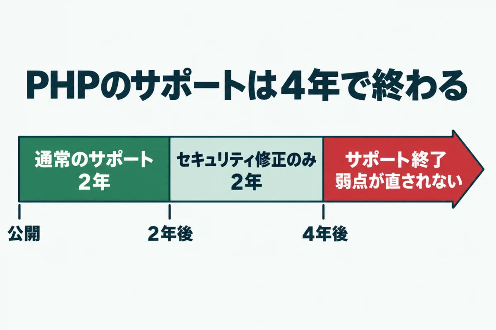
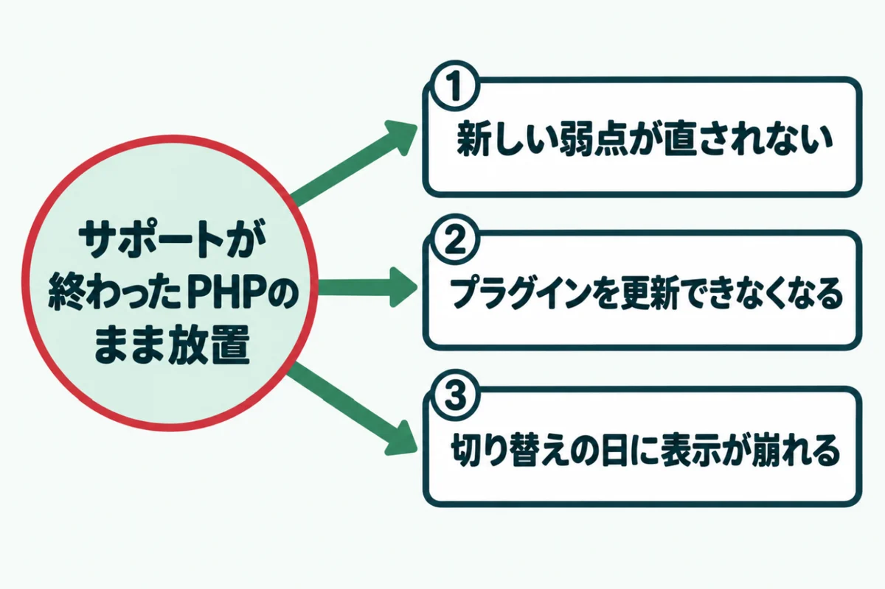
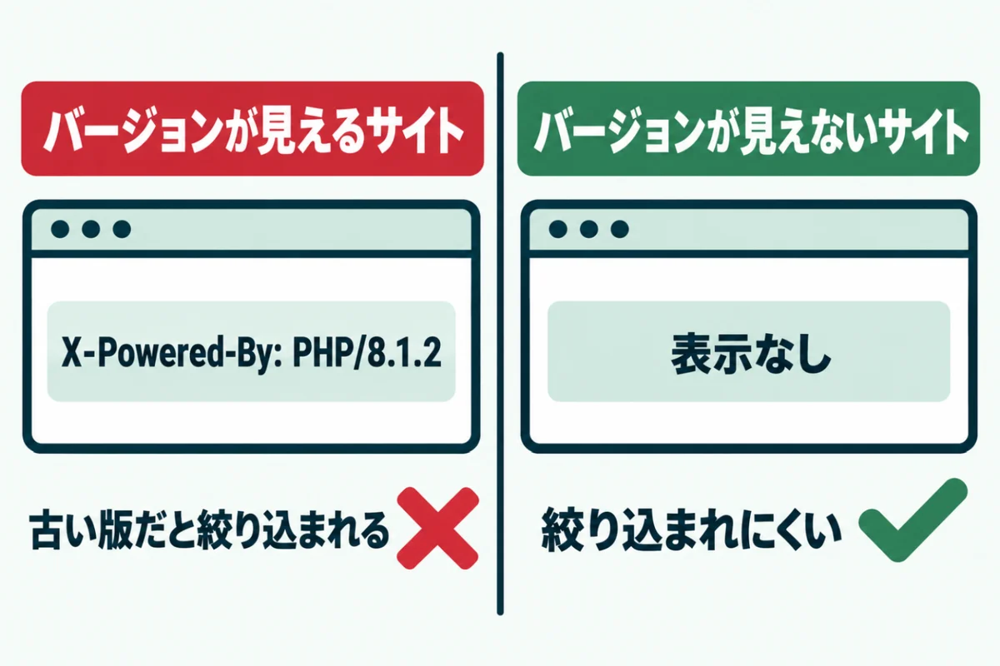
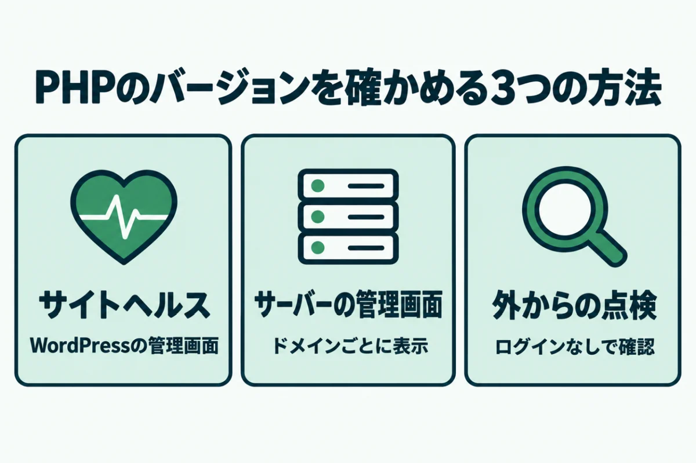
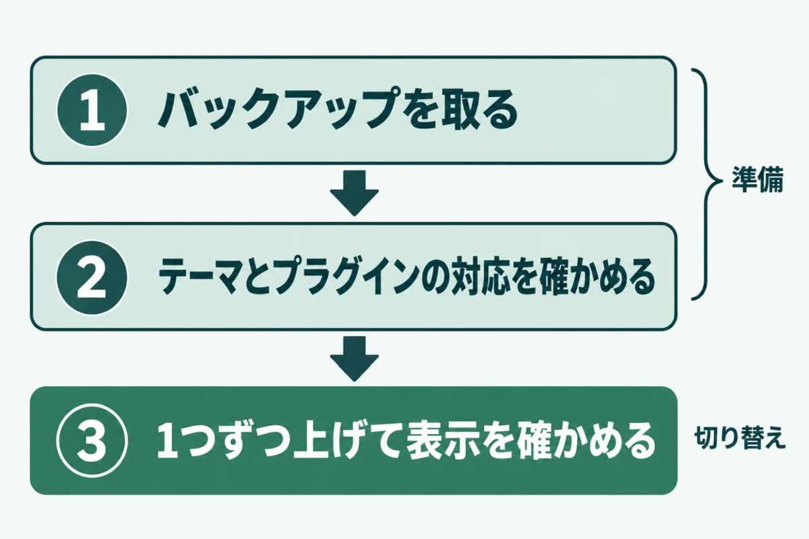
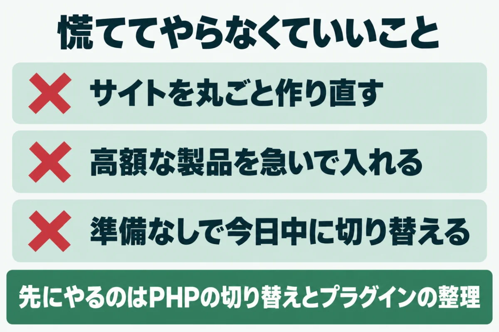

PHPのサポート終了とは？放置の危険と確認・更新の手順8.2は2026年末で終了

「うちのサイトのPHP、サポートが終わっているの？」と気になっていませんか？
サーバー会社のお知らせやWordPressの警告で知っても、どこまで急ぐべきかは判断しにくいものです。
この記事では、PHPのサポート終了の意味と放置したときに起きることを解説します。自分のサイトのバージョンの確かめ方と、安全に更新する手順もまとめました。
ホームページの管理を任されている方が、今日から何をすればいいかを判断できるようになります。
PHPのサポート終了とは

PHPのサポート終了とは、見つかった弱点を開発元がもう直さなくなった状態のことです。PHPは公開から4年でサポートが終わる決まりで、終了日は公式サイトで発表されています。
PHPは、WordPressをはじめ多くのホームページを動かしているプログラムの言語です。サーバーの中で動くため、ふだんの運用で意識する場面はほとんどありません。そのぶん、古いバージョンのまま何年も動き続けているサイトがよく見つかります。
通常のサポートとセキュリティサポートの違い
PHPのサポートは2段階に分かれています。公開から2年間は「通常のサポート」で、不具合と弱点の両方が直されます。続く2年間は「セキュリティサポート」と呼ばれる期間です。
この期間には、重大な弱点の修正だけが必要に応じて出されます。合わせて4年を過ぎると、弱点が見つかっても修正版は出ません。開発元は、サポートが終わった版の利用者に、早めの移行を呼びかけています。
2026年10月時点の各バージョンのサポート期限
2026年10月時点で、弱点の修正が続いているのは8.2から8.5までの4つです。なかでも8.2は2026年12月31日でサポートが終わります。
| バージョン | 通常のサポート | セキュリティサポート | 2026年10月時点 |
|---|---|---|---|
| 7.4 | 2021年11月28日まで | 2022年11月28日まで | サポート終了 |
| 8.0 | 2022年11月26日まで | 2023年11月26日まで | サポート終了 |
| 8.1 | 2023年11月25日まで | 2025年12月31日まで | サポート終了 |
| 8.2 | 2024年12月31日まで | 2026年12月31日まで | まもなく終了 |
| 8.3 | 2025年12月31日まで | 2027年12月31日まで | セキュリティ修正のみ |
| 8.4 | 2026年12月31日まで | 2028年12月31日まで | サポート中 |
| 8.5 | 2027年12月31日まで | 2029年12月31日まで | サポート中 |
8.1以前は、すでにサポートが終わっています。いま8.2を使っているサイトも、年内に切り替えの準備が必要です。移る先は、通常のサポートが残っている8.4か8.5が候補になります。
PHPのサポート終了を放置すると起きる3つのこと

PHPのサポート終了を放置しても、すぐに表示が止まるわけではありません。ただし、見えないところで弱点が積み上がり、ある日まとめて表に出ます。
やっかいなのは、ふだんの見た目からは何も変わったように見えない点です。担当者が気づくのは、改ざんや表示崩れが起きてからということも珍しくありません。起きることは、次の3つに分けられます。
① 新しく見つかった弱点が直されない
サポートが終わったバージョンにも、弱点は新しく見つかり続けます。開発元が修正版を出さないため、見つかった弱点はそのまま残ります。
攻撃する側は、公表された弱点を狙えるサイトを、自動の仕組みで探しているのです。会社の規模やアクセスの多さに関係なく狙われるのは、このためです。小さな会社のサイトほど気づくのが遅れ、被害が広がりやすくなります。
② WordPressやプラグインの更新についていけなくなる
WordPressは、PHP 8.3以上を推奨しています。7.4以上でも動きますが、公式の案内にはサポートが終わった環境だという注意があります。
プラグインやテーマも、新しい版から順に古いPHPへの対応を外していくのが一般的です。古いPHPのままでは、更新したくても更新できないプラグインが増えます。やがて本体の更新も止まり、弱点がさらに重なってしまいます。
③ サーバー会社の切り替えで突然表示が崩れる
サーバー会社は、古いPHPの提供をいつまでも続けるわけではありません。提供の終わりを告知し、期日までの切り替えを利用者に求める形がよく見られます。
準備のないまま期日を迎えると、切り替えの当日に表示崩れやエラーが一度に出ます。サーバー会社によっては、切り替えたあとに元の版へ戻せません。期日の案内が届いた時点で、計画を立て始めるのが安全です。
PHPのサポート終了が他人事ではない理由

PHPのサポート終了は、管理が手薄な小さなサイトだけの問題ではありません。大きな会社でもサポート終了版のまま動いている例が多いことが、調査で分かっています。
しかも、PHPのバージョンは外から見えてしまうことがあります。古い版を使っていると、攻撃する側に「狙いやすいサイト」だと知らせる形になるのです。ここからは、その2つの事情を見ていきます。
上場企業のサイトでも7割がサポート終了版
GMOプライム・ストラテジーは2026年6月、上場企業のサイトの調査結果を発表しました。東証上場の3,941社、24,995サイトを外から自動で調べたものです。
PHPの版が外から分かったのは2,654サイトでした。そのうち70.1%にあたる1,860サイトがサポート終了済みの版で動いています。447サイトは、10年以上前にサポートが終わった5系以前の版でした。専任の担当者がいる会社でも、PHPの更新は後回しにされやすいのです。
PHPのバージョンは外から見えることがある
PHPは初期設定のままだと、サイトの応答にバージョンを書き添えます。「X-Powered-By: PHP/8.1.2」のような表示です。設定項目「expose_php」の既定値が、有効になっているためです。
攻撃する側はこの表示を手がかりに、弱点のある古い版のサイトだけを絞り込めます。サイトドックの無料簡易診断でも、最初にこの表示を確かめています。運営者の自社サイト2つで試したところ、どちらもバージョンを表示しない設定でした。
自分のサイトのPHPバージョンを確かめる方法

自分のサイトのPHPバージョンは、3つの方法で確かめられます。WordPressの管理画面、サーバーの管理画面、外からの点検の3つです。今のバージョンを知ることが、すべての対策の出発点になります。
どの方法でも、かかる時間は数分ほどです。管理画面に入れる方は上の2つ、入れない方や外からの見え方を知りたい方は3つ目を使ってください。結果は、先ほどの期限の表と見比べます。
WordPressの「サイトヘルス」で確かめる
WordPressの管理画面にログインし、「ツール」から「サイトヘルス」を開きます。「情報」のタブで「サーバー」の項目を開くと、PHPのバージョンが表示されます。
「ステータス」のタブに、PHPが古いという警告が出ていることもあるでしょう。警告が出ていたら、更新の時期が来ている合図だと考えてください。管理画面に入れる方にとっては、いちばん手軽な方法です。
サーバーの管理画面で確かめる
共用サーバーの多くは、管理画面のPHPの設定メニューに、ドメインごとのバージョンを表示しています。WordPress以外で作ったサイトでも使える方法です。
同じ契約で複数のサイトを持っている場合は、サイトごとにバージョンを確かめる必要があります。ドメインによって設定が違うことがあるためです。古いサイトだけが取り残されている例は、よく見かけます。
外から見えているかを確かめる
管理画面に入れない場合や、外からの見え方を知りたい場合は、外からの点検が向いています。サイトドックの無料簡易診断なら、URLを入れるだけで判定が出ます。
PHPのバージョンが外から見えない場合の表示は「判定なし」です。バージョンを隠す設定は、それ自体が攻撃の手がかりを減らすよい対策です。ただし、隠しているだけで古いままのこともあります。管理画面での確認と組み合わせてください。
PHPのサポート終了に備えて更新する手順

PHPの更新は、準備をしてから切り替え、表示を確かめる順で進めます。いきなり本番のサイトで切り替えないことが、失敗を防ぐいちばんの近道です。
作業そのものは、管理画面でバージョンを選び直すだけで終わることがほとんどです。時間がかかるのは、その前の準備と、切り替えたあとの確認になります。次の3つの段階を、順番に進めてください。
① バックアップを取る
切り替えの前に、サイトのファイルとデータベースをまとめて控えます。サーバー会社の自動バックアップがあっても、作業の直前に手動で取っておくと安心です。
戻せる状態を作ってから作業を始めることで、表示が崩れても落ち着いて対応できます。復元の手順も、サーバー会社の案内で事前に確かめておきましょう。控えたファイルの保存先も、あわせて決めておいてください。
② テーマとプラグインの対応を確かめる
次に、WordPress本体とテーマ、プラグインを先に最新にします。プラグインの配布ページには、動作を確かめたPHPのバージョンが書かれていることがあります。
長く更新されていないプラグインは、新しいPHPで動かないおそれがあるでしょう。配布が止まったものも同じです。代わりのプラグインを先に決めておくと、切り替えの当日に慌てずに済みます。
③ 1つずつ上げて表示を確かめる
準備ができたら、アクセスの少ない時間にPHPを切り替えます。切り替えたら、トップページやよく見られるページを確かめましょう。お問い合わせフォームと管理画面も忘れずに見てください。
今の版と移る先の差が大きいときは、1つずつ上げるのが安全です。7.4なら8.0、8.1と順に進めると、原因を見つけやすくなります。エラーが出たら、すぐに元のバージョンへ戻して原因を調べてください。
PHPのサポート終了で慌ててやらなくていいこと

PHPのサポート終了の知らせを受けても、慌てて大きな作業を始める必要はありません。多くの場合は、PHPの切り替えとプラグインの整理で足ります。
たとえば、サイトを丸ごと作り直す必要は、ほとんどの場合ありません。高額なセキュリティ製品を急いで入れるより、PHPとWordPressを新しくするほうが効果的です。準備をしないまま、今日中に本番を切り替える必要もないでしょう。
8.2のサポートが終わるのは、2026年12月31日です。年内に計画を立てて余裕を持って切り替えるほうが、結果として安全に終わります。
URLを入れるだけで、PHPのバージョンを含む7項目を無料で判定します。登録はいりません。
無料で診断するPHPのサポート終了に関するよくある質問
PHPのサポートが終わっても、サイトはそのまま表示されますか？
多くの場合、そのまま表示されます。サポートが終わってもPHPが止まるわけではなく、弱点が直されなくなるだけだからです。見た目に変化がないため、気づかないまま何年も放置されやすいことが、いちばんの問題でしょう。表示が続いているうちに、更新の計画を立ててください。まずは今のバージョンを確かめるところからで十分です。
サーバー会社がPHPを自動で新しくしてくれることはありますか？
サーバー会社によっては、古いPHPの提供を終えるときに、期日を決めて新しい版へ切り替えます。ただし、切り替えで表示が崩れても、サイトの中身の修正までは対応してもらえないことがほとんどです。お知らせのメールが届いたら、期日より前に自分で切り替えて確かめておくと安全でしょう。メールには期日と移る先の版が書かれているので、見落とさないようにしてください。
PHPを上げて表示が崩れたら、元のバージョンに戻せますか？
多くの共用サーバーでは、管理画面から元のバージョンに戻せます。ただし、サーバー会社やプランによっては、切り替えたあとに戻せないこともあるため注意が必要です。作業の前に戻せるかどうかを案内で確かめておきましょう。戻せない場合は、バックアップからの復元を前提に進めてください。復元の手順も、作業の前に一度確かめておくと安心です。
PHP 8.2を使っている場合、いつまでに切り替えればいいですか？
8.2のセキュリティサポートは2026年12月31日で終わるため、それまでに切り替えます。年末はサーバー会社や制作会社も混み合うので、11月中に準備を始めるのが現実的です。移る先は通常のサポートが続く8.4か8.5を選ぶと、次の切り替えまでの期間を長く取れるでしょう。8.4なら、弱点の修正は2028年末まで続きます。
PHPのバージョンを外から見えないようにできますか？
できます。PHPの設定「expose_php」を無効にすると、応答にバージョンが書き添えられなくなります。共用サーバーでは、管理画面のphp.iniの設定から変えられることもあるでしょう。ただし、見えなくしても古い版の弱点は残ります。バージョンの更新と組み合わせることが前提です。設定を変えたあとは、無料簡易診断で表示が消えたかを確かめられます。
まとめ
PHPのサポートが終わっても表示は続きますが、弱点は直されなくなります。放置するほどWordPressやプラグインの更新も止まり、問題がまとめて表に出やすくなるのです。
先にやることは、今のバージョンを確かめることと、8.2以前なら年内の切り替えを計画することです。サイトの作り直しや高額な製品の導入は、後回しにして構いません。
まずはサイトヘルスか無料簡易診断で、今の状態を確かめるところから始めてください。
まずは、今の状態を知るところから。
URLを入れるだけで、数十秒で判定が出ます。登録はいりません。